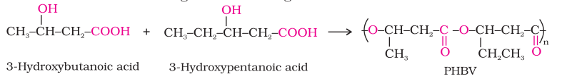

A large number of polymers are quite resistant to the environmental degradation processes and are thus responsible for the accumulation of polymeric solid waste materials. These solid wastes cause acute environmental problems and remain undegraded for quite a long time. In view of the general awareness and concern for the problems created by the polymeric solid wastes, certain new biodegradable synthetic polymers have been designed and developed. These polymers contain functional groups similar to the functional groups present in biopolymers.
Aliphatic polyesters are one of the important classes of biodegradable polymers. Some important examples are given below:
It is obtained by the copolymerisation of 3-hydroxybutanoic acid and 3 - hydroxypentanoic acid. PHBV is used in speciality packaging, orthopaedic devices and in controlled release of drugs. PHBV undergoes bacterial degradation in the environment.

It is an alternating polyamide copolymer of glycine (H2N–CH2–COOH) and amino caproic acid [H2N (CH2)5 COOH] and is biodegradable. Can you write the structure of this copolymer?